stat4arch
author: Petr Pajdla & Peter Tkáč autosize: true width: 1920 height: 1080
AES_707: Statistics seminar for archaeologists
Seminar 4
type: section
31. 3. 2022
- Relationship of two variables (correlation, scatterplots).
- Data manipulation basics (base R and dplyr package).
- Normal distribution.
- Your data sets for the project?
Relationship of two variables
type: section
Correlation
incremental: false
A statistic describing a relationship between two continuous variables.
To what degree is a variable y explained by x?
Correlation coefficient r, from -1 to +1.
Correlation does not imply causation!
r = 1 – strong positive correlation
r = 0.5 – moderately strong positive correlation
r = 0 – variables are not correlated
r = -0.2 – weak negative correlation
r = -1 – strong negative correlation
- Function
cor(x, y)
x <- 1:100cor(x, y = 1:100)[1] 1cor(x, y = 100:1)[1] -1cor(x, y = rnorm(100))[1] -0.02130012Scatter plot
Plot displying two continuous variables, x and y.
x axis: explanatory variable, independent, predictor
y axis: dependent variable, response
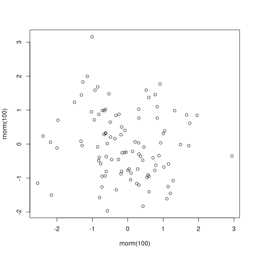
Correlation
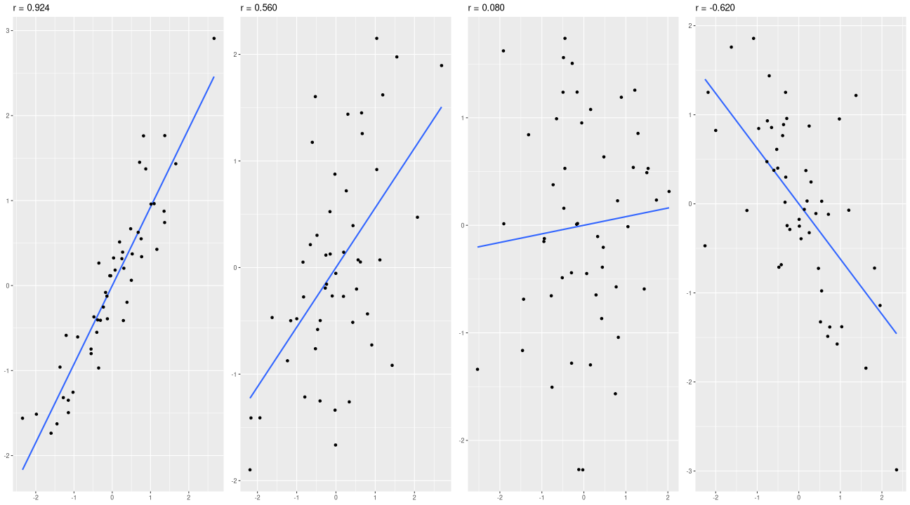
Spurrious correlations
Correlation does not imply causality!
http://www.tylervigen.com/spurious-correlations
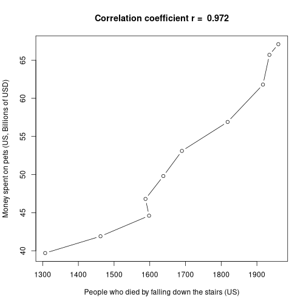
Guess the correlation game…
Task - syntax elements
type:prompt incremental: true 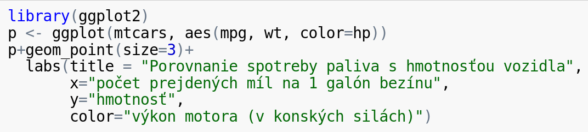
Try to identify the syntax elements of the code above:
- what is
ggplot2? - what is the name of the dataset?
- what is the name of the variable plotted on axis y?
- how many variables are plotted here?
- what is the type of the plot? (what is the type of geometry?)
- is there any way how to change the size of the dots / points?
Result
type: prompt
library(ggplot2)
p <- ggplot(mtcars, aes(mpg, wt, color=hp))
p+geom_point(size=3)+
labs(title = "Porovnanie spotreby paliva s hmotnosťou vozidla",
x="počet prejdených míl na 1 galón bezínu",
y="hmotnosť",
color="výkon motora (v konských silách)")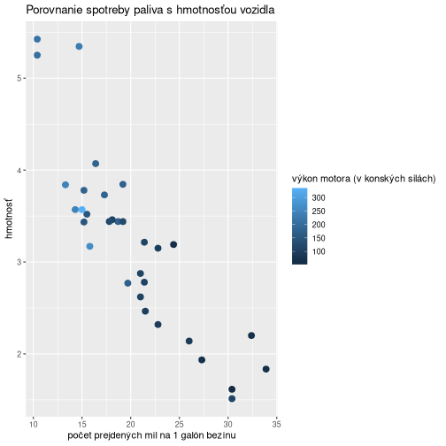
Plots for 2 continuous variables
type: section
Packages
library(archdata)
library(ggplot2)Data
data(DartPoints)
sipky <- data.frame(DartPoints)
head(sipky,4) Name Catalog TARL Quad Length Width Thickness B.Width J.Width H.Length
1 Darl 41-0322 41CV0536 26/59 42.8 15.8 5.8 11.3 10.6 11.6
2 Darl 35-2946 41CV0235 21/63 40.5 17.4 5.8 NA 13.7 12.9
3 Darl 35-2921 41CV0132 20/63 37.5 16.3 6.1 12.1 11.3 8.2
4 Darl 36-3487 41CV0594 10/54 40.3 16.1 6.3 13.5 11.7 8.3
Weight Blade.Sh Base.Sh Should.Sh Should.Or Haft.Sh Haft.Or
1 3.6 S I S T S E
2 4.5 S I S T S E
3 3.6 S I S T S E
4 4.0 S I S T S EDistribution
Length
p <- ggplot(sipky, aes(Length))
p + geom_histogram(binwidth=5)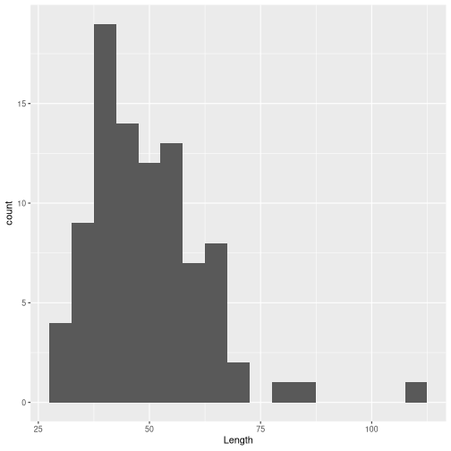 *** ## Width
p <- ggplot(sipky, aes(Width))
p + geom_histogram(binwidth=5)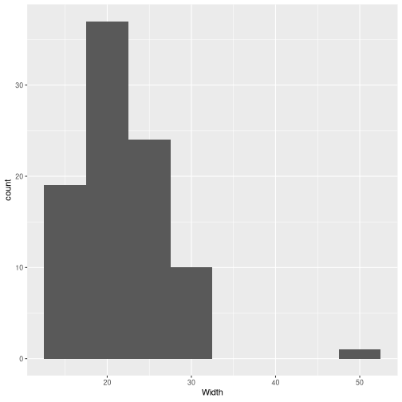
Plotting 2 variables
Correlation between length and width
p <- ggplot(sipky, aes(Length, Width))
p + geom_point()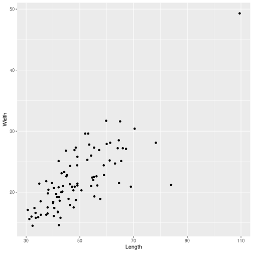
Plotting 3 variables
Adding 3th variable (weight) and adjusting size of the dots
p <- ggplot(sipky, aes(Length, Width, color=Weight))
p + geom_point(size=3)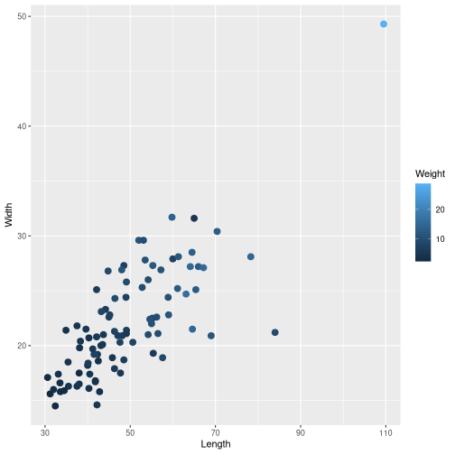
Observing trend
p <- ggplot(sipky, aes(Length, Width, color=Weight))
p + geom_point(size=3) +
geom_smooth()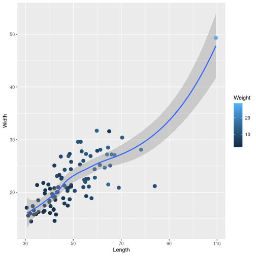
Different models
method = "loess"
p <- ggplot(sipky, aes(Length, Width, color=Weight))
p + geom_point(size=3) +
geom_smooth(method = "loess")method = "lm"
p <- ggplot(sipky, aes(Length, Width, color=Weight))
p + geom_point(size=3) +
geom_smooth(method = "lm")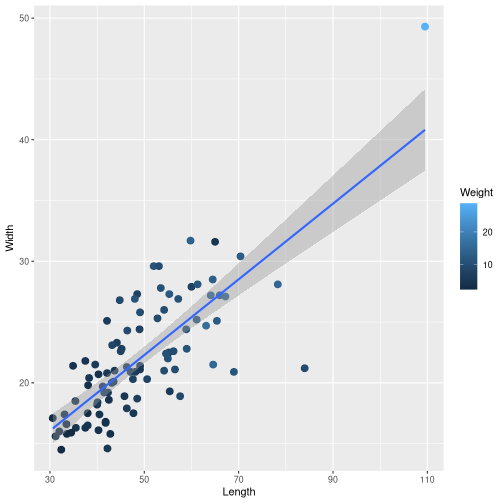
Small multiples - 4th variable
Grouping the darts by categorical variable Name
p <- ggplot(sipky, aes(Length, Width, color=Weight))
p + geom_point(size=3) +
facet_wrap(~Name, nrow=1)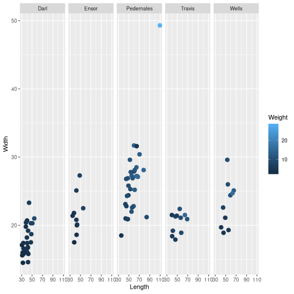
Data transformation
type: section
Package
dplyr
Functions
selectarrangefiltersummarise%>%mutate
Select
Lets create a smaller dataframes from selected variables
select
select(sipky, Name, Catalog, Length, Width, Weight) Name Catalog Length Width Weight
1 Darl 41-0322 42.8 15.8 3.6
2 Darl 35-2946 40.5 17.4 4.5
3 Darl 35-2921 37.5 16.3 3.6
4 Darl 36-3487 40.3 16.1 4.0
5 Darl 36-3321 30.6 17.1 2.3
6 Darl 35-2959 41.8 16.8 3.0
7 Darl 35-2866 40.3 20.7 3.9
8 Darl 41-0323 48.5 18.7 6.2
9 Darl 35-2325 47.7 17.5 5.1
10 Darl 40-0847 33.6 15.8 2.8
11 Darl 36-3520 32.4 14.5 2.5
12 Darl 38-0736 42.2 14.6 4.8
13 Darl 41-0257 33.5 16.6 3.2
14 Darl 35-2905 41.8 16.7 3.8
15 Darl 36-3898 38.0 16.5 4.5
16 Darl 35-2871 35.5 16.3 4.4
17 Darl 35-2382 31.2 15.6 2.5
18 Darl 35-3026 34.5 15.9 2.3
19 Darl 36-4247 33.1 17.4 4.2
20 Darl 36-3619 32.0 16.0 3.3
21 Darl 36-3036 38.1 19.8 3.6
22 Darl 35-2004 47.6 20.3 7.4
23 Darl 35-0164 42.3 19.2 5.6
24 Darl 36-3059 38.3 20.4 4.8
25 Darl 35-2960 50.6 20.3 7.8
26 Darl 41-0237 54.2 21.0 9.2
27 Darl 35-3043 44.2 23.3 6.2
28 Darl 35-2928 40.0 18.2 4.3
29 Ensor 36-3019 43.5 20.1 4.6
30 Ensor 35-2958 42.1 20.8 5.4
31 Ensor 35-2174 42.1 25.1 5.9
32 Ensor 41-0321 43.1 20.0 5.1
33 Ensor 36-3493 37.5 21.8 4.7
34 Ensor 36-3526 55.2 22.5 7.2
35 Ensor 35-2176 38.0 17.5 2.5
36 Ensor 35-2979 42.5 18.6 3.9
37 Ensor 35-2645 34.9 21.4 4.1
38 Ensor 41-0210 48.5 27.3 7.2
39 Pedernales 36-3026 53.5 27.8 10.7
40 Pedernales 35-2391 66.0 27.2 12.5
41 Pedernales 35-2951 64.5 28.5 13.4
42 Pedernales 35-2875 59.0 22.8 11.1
43 Pedernales 35-2901 60.0 27.9 7.2
44 Pedernales 35-2855 109.5 49.3 28.8
45 Pedernales 35-2384 59.8 31.7 13.9
46 Pedernales 41-0054 52.8 25.3 9.4
47 Pedernales 36-3549 43.7 21.0 5.3
48 Pedernales 35-2873 43.2 23.1 7.9
49 Pedernales 41-0220 49.0 24.4 7.3
50 Pedernales 36-3229 55.3 27.3 12.2
51 Pedernales 36-3879 84.0 21.2 9.3
52 Pedernales 36-3081 48.0 26.9 11.1
53 Pedernales 35-0173 78.3 28.1 14.8
54 Pedernales 36-3880 57.2 26.9 10.7
55 Pedernales 36-3897 52.0 29.6 11.1
56 Pedernales 41-0058 61.1 25.2 12.3
57 Pedernales 38-0098 70.4 30.4 13.1
58 Pedernales 41-0008 48.1 20.9 6.1
59 Pedernales 35-2863 46.4 24.3 9.2
60 Pedernales 35-2650 56.2 22.6 9.4
61 Pedernales 36-4320 47.1 20.9 6.7
62 Pedernales 41-0239 67.2 27.1 15.3
63 Pedernales 36-4266 64.1 27.2 15.1
64 Pedernales 43-0110 65.0 31.6 4.6
65 Pedernales 44-0643 35.4 18.5 4.3
66 Pedernales 44-1253M 61.3 28.1 11.6
67 Pedernales 44-1492M 55.0 22.0 10.5
68 Pedernales 44-1315M 45.2 22.8 6.8
69 Pedernales 47-0041 44.8 26.8 9.1
70 Pedernales 50-0092 49.1 25.8 9.4
71 Travis 35-3164 56.5 21.1 9.5
72 Travis 41-0163 54.6 22.4 10.4
73 Travis 35-2897 46.3 21.3 7.5
74 Travis 35-3075 57.6 18.9 8.7
75 Travis 41-0160 49.1 21.4 6.9
76 Travis 36-0006 64.6 21.5 15.0
77 Travis 43-0112 69.0 20.9 11.4
78 Travis 37-0752 40.1 18.4 6.3
79 Travis 38-0802 41.5 19.2 7.5
80 Travis 40-0661 46.3 17.9 5.9
81 Travis 44-0031 39.6 21.5 5.4
82 Wells 35-0162 53.1 29.6 9.5
83 Wells 36-3586 41.2 19.7 5.4
84 Wells 35-0161 45.0 22.6 7.1
85 Wells 37-0762 54.2 26.0 9.7
86 Wells 36-3088 65.4 25.1 12.6
87 Wells 35-3079 58.9 24.4 10.5
88 Wells 35-2898 55.4 19.3 5.6
89 Wells 35-2458 45.8 18.9 4.9
90 Wells 35-3012 49.1 21.1 5.2
91 Wells 44-0732 63.1 24.7 16.3Select
And lets create a new dataframe sipky_sel from the selection
sipky_sel <- select(sipky, Name, Catalog, Length, Width, Weight)
head(sipky_sel, 4) Name Catalog Length Width Weight
1 Darl 41-0322 42.8 15.8 3.6
2 Darl 35-2946 40.5 17.4 4.5
3 Darl 35-2921 37.5 16.3 3.6
4 Darl 36-3487 40.3 16.1 4.0How to identify and filter out an outlier?
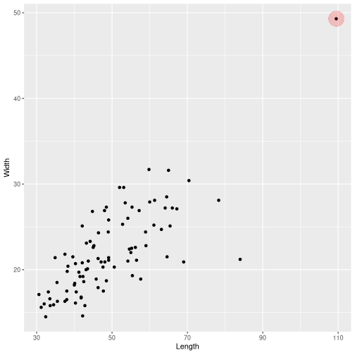
Arrange
Lets arrange data from lowest to highest value
arrange(sipky_sel, Length) Name Catalog Length Width Weight
1 Darl 36-3321 30.6 17.1 2.3
2 Darl 35-2382 31.2 15.6 2.5
3 Darl 36-3619 32.0 16.0 3.3
4 Darl 36-3520 32.4 14.5 2.5
5 Darl 36-4247 33.1 17.4 4.2
6 Darl 41-0257 33.5 16.6 3.2
7 Darl 40-0847 33.6 15.8 2.8
8 Darl 35-3026 34.5 15.9 2.3
9 Ensor 35-2645 34.9 21.4 4.1
10 Pedernales 44-0643 35.4 18.5 4.3
11 Darl 35-2871 35.5 16.3 4.4
12 Darl 35-2921 37.5 16.3 3.6
13 Ensor 36-3493 37.5 21.8 4.7
14 Darl 36-3898 38.0 16.5 4.5
15 Ensor 35-2176 38.0 17.5 2.5
16 Darl 36-3036 38.1 19.8 3.6
17 Darl 36-3059 38.3 20.4 4.8
18 Travis 44-0031 39.6 21.5 5.4
19 Darl 35-2928 40.0 18.2 4.3
20 Travis 37-0752 40.1 18.4 6.3
21 Darl 36-3487 40.3 16.1 4.0
22 Darl 35-2866 40.3 20.7 3.9
23 Darl 35-2946 40.5 17.4 4.5
24 Wells 36-3586 41.2 19.7 5.4
25 Travis 38-0802 41.5 19.2 7.5
26 Darl 35-2959 41.8 16.8 3.0
27 Darl 35-2905 41.8 16.7 3.8
28 Ensor 35-2958 42.1 20.8 5.4
29 Ensor 35-2174 42.1 25.1 5.9
30 Darl 38-0736 42.2 14.6 4.8
31 Darl 35-0164 42.3 19.2 5.6
32 Ensor 35-2979 42.5 18.6 3.9
33 Darl 41-0322 42.8 15.8 3.6
34 Ensor 41-0321 43.1 20.0 5.1
35 Pedernales 35-2873 43.2 23.1 7.9
36 Ensor 36-3019 43.5 20.1 4.6
37 Pedernales 36-3549 43.7 21.0 5.3
38 Darl 35-3043 44.2 23.3 6.2
39 Pedernales 47-0041 44.8 26.8 9.1
40 Wells 35-0161 45.0 22.6 7.1
41 Pedernales 44-1315M 45.2 22.8 6.8
42 Wells 35-2458 45.8 18.9 4.9
43 Travis 35-2897 46.3 21.3 7.5
44 Travis 40-0661 46.3 17.9 5.9
45 Pedernales 35-2863 46.4 24.3 9.2
46 Pedernales 36-4320 47.1 20.9 6.7
47 Darl 35-2004 47.6 20.3 7.4
48 Darl 35-2325 47.7 17.5 5.1
49 Pedernales 36-3081 48.0 26.9 11.1
50 Pedernales 41-0008 48.1 20.9 6.1
51 Darl 41-0323 48.5 18.7 6.2
52 Ensor 41-0210 48.5 27.3 7.2
53 Pedernales 41-0220 49.0 24.4 7.3
54 Pedernales 50-0092 49.1 25.8 9.4
55 Travis 41-0160 49.1 21.4 6.9
56 Wells 35-3012 49.1 21.1 5.2
57 Darl 35-2960 50.6 20.3 7.8
58 Pedernales 36-3897 52.0 29.6 11.1
59 Pedernales 41-0054 52.8 25.3 9.4
60 Wells 35-0162 53.1 29.6 9.5
61 Pedernales 36-3026 53.5 27.8 10.7
62 Darl 41-0237 54.2 21.0 9.2
63 Wells 37-0762 54.2 26.0 9.7
64 Travis 41-0163 54.6 22.4 10.4
65 Pedernales 44-1492M 55.0 22.0 10.5
66 Ensor 36-3526 55.2 22.5 7.2
67 Pedernales 36-3229 55.3 27.3 12.2
68 Wells 35-2898 55.4 19.3 5.6
69 Pedernales 35-2650 56.2 22.6 9.4
70 Travis 35-3164 56.5 21.1 9.5
71 Pedernales 36-3880 57.2 26.9 10.7
72 Travis 35-3075 57.6 18.9 8.7
73 Wells 35-3079 58.9 24.4 10.5
74 Pedernales 35-2875 59.0 22.8 11.1
75 Pedernales 35-2384 59.8 31.7 13.9
76 Pedernales 35-2901 60.0 27.9 7.2
77 Pedernales 41-0058 61.1 25.2 12.3
78 Pedernales 44-1253M 61.3 28.1 11.6
79 Wells 44-0732 63.1 24.7 16.3
80 Pedernales 36-4266 64.1 27.2 15.1
81 Pedernales 35-2951 64.5 28.5 13.4
82 Travis 36-0006 64.6 21.5 15.0
83 Pedernales 43-0110 65.0 31.6 4.6
84 Wells 36-3088 65.4 25.1 12.6
85 Pedernales 35-2391 66.0 27.2 12.5
86 Pedernales 41-0239 67.2 27.1 15.3
87 Travis 43-0112 69.0 20.9 11.4
88 Pedernales 38-0098 70.4 30.4 13.1
89 Pedernales 35-0173 78.3 28.1 14.8
90 Pedernales 36-3879 84.0 21.2 9.3
91 Pedernales 35-2855 109.5 49.3 28.8Arrange
head(arrange(sipky_sel, Length),4) Name Catalog Length Width Weight
1 Darl 36-3321 30.6 17.1 2.3
2 Darl 35-2382 31.2 15.6 2.5
3 Darl 36-3619 32.0 16.0 3.3
4 Darl 36-3520 32.4 14.5 2.5Arrange - descent
And now from highest to lowest value!
head(arrange(sipky_sel, desc(Length)),4) Name Catalog Length Width Weight
1 Pedernales 35-2855 109.5 49.3 28.8
2 Pedernales 36-3879 84.0 21.2 9.3
3 Pedernales 35-0173 78.3 28.1 14.8
4 Pedernales 38-0098 70.4 30.4 13.1Filter
Lets filter some data
filter(sipky_sel, Length > 90) Name Catalog Length Width Weight
1 Pedernales 35-2855 109.5 49.3 28.8sipky_90 <- filter(sipky_sel, Length < 90)
head(arrange(sipky_90, desc(Length)),4) Name Catalog Length Width Weight
1 Pedernales 36-3879 84.0 21.2 9.3
2 Pedernales 35-0173 78.3 28.1 14.8
3 Pedernales 38-0098 70.4 30.4 13.1
4 Travis 43-0112 69.0 20.9 11.4Filter
You can also filter rows with specific value, e.g. here we filter all darts called “Darl”
sipky_darl<-filter(sipky_sel, Name=="Darl")
head(sipky_darl) Name Catalog Length Width Weight
1 Darl 41-0322 42.8 15.8 3.6
2 Darl 35-2946 40.5 17.4 4.5
3 Darl 35-2921 37.5 16.3 3.6
4 Darl 36-3487 40.3 16.1 4.0
5 Darl 36-3321 30.6 17.1 2.3
6 Darl 35-2959 41.8 16.8 3.0Task - filtering more than one value
type: prompt incremental: true
Create a dataframe with darts named “Darl” or “Ensor”
vyber<-c("Darl","Ensor")
darl_ensor<-filter(sipky_sel, Name==vyber)summary(darl_ensor$Name) Darl Ensor Pedernales Travis Wells
14 5 0 0 0 Summarise
mean(sipky_sel$Length)[1] 49.33077summarise(sipky_sel, dlzka_prum = mean(Length)) dlzka_prum
1 49.33077summarise(sipky_sel, dlzka_prum = mean(Length),
dlzka_sd = sd(Length),
dlzka_min = min(Length),
dlzka_max = max(Length),
ks = n()) dlzka_prum dlzka_sd dlzka_min dlzka_max ks
1 49.33077 12.73619 30.6 109.5 91Grouping
group_by(sipky_sel, Name)# A tibble: 91 × 5
# Groups: Name [5]
Name Catalog Length Width Weight
<fct> <chr> <dbl> <dbl> <dbl>
1 Darl 41-0322 42.8 15.8 3.6
2 Darl 35-2946 40.5 17.4 4.5
3 Darl 35-2921 37.5 16.3 3.6
4 Darl 36-3487 40.3 16.1 4
5 Darl 36-3321 30.6 17.1 2.3
6 Darl 35-2959 41.8 16.8 3
7 Darl 35-2866 40.3 20.7 3.9
8 Darl 41-0323 48.5 18.7 6.2
9 Darl 35-2325 47.7 17.5 5.1
10 Darl 40-0847 33.6 15.8 2.8
# … with 81 more rowsPipe operator
Summarizing data
sipky_group <- sipky_sel %>%
group_by(Name) %>%
summarise (dlzka_prum = mean(Length),
ks = n())
sipky_group# A tibble: 5 × 3
Name dlzka_prum ks
<fct> <dbl> <int>
1 Darl 39.8 28
2 Ensor 42.7 10
3 Pedernales 57.9 32
4 Travis 51.4 11
5 Wells 53.1 10Mutate
mutate(sipky_group, frekvence = ks/sum(ks),
procento = round((frekvence*100),0))# A tibble: 5 × 5
Name dlzka_prum ks frekvence procento
<fct> <dbl> <int> <dbl> <dbl>
1 Darl 39.8 28 0.308 31
2 Ensor 42.7 10 0.110 11
3 Pedernales 57.9 32 0.352 35
4 Travis 51.4 11 0.121 12
5 Wells 53.1 10 0.110 11Summarizing once again
sipky_group<-sipky_sel %>%
group_by(Name)%>%
summarise (dlzka_prum = mean(Length),
dlzka_sd = sd(Length),
ks = n()) %>%
mutate(frekvence = ks / sum(ks),
procento = round((frekvence*100),0))
head(sipky_group)# A tibble: 5 × 6
Name dlzka_prum dlzka_sd ks frekvence procento
<fct> <dbl> <dbl> <int> <dbl> <dbl>
1 Darl 39.8 6.18 28 0.308 31
2 Ensor 42.7 5.79 10 0.110 11
3 Pedernales 57.9 14.1 32 0.352 35
4 Travis 51.4 9.90 11 0.121 12
5 Wells 53.1 7.94 10 0.110 11Point plots (Cleveland dotplot)
type: section
Ploting new dataframe
p <- ggplot(sipky_group, aes(Name, dlzka_prum))
p + geom_bar(stat="identity")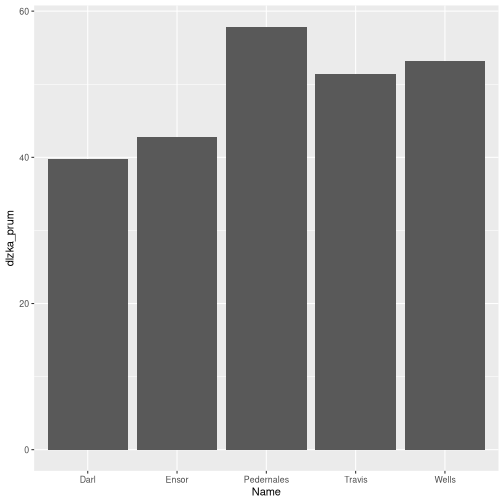
Cleveland dotplot
p <- ggplot(sipky_group, aes(Name, dlzka_prum))
p + geom_point()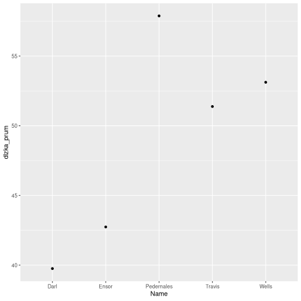
p <- ggplot(sipky_group, aes(Name, dlzka_prum))
p + geom_point(size=3)+
coord_flip()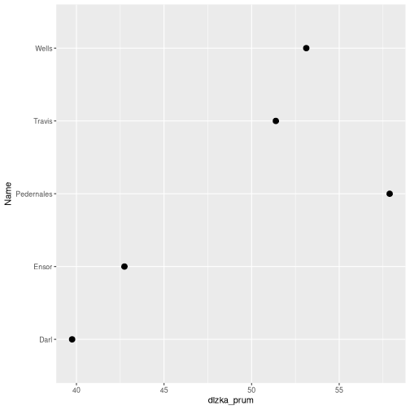 Adjusting dotplot ===============================================
p <- ggplot(sipky_group, aes(reorder(Name, dlzka_prum), dlzka_prum))
p + geom_point(size=4)+
coord_flip()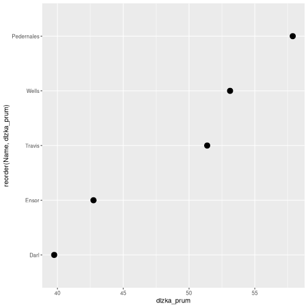
Adding standart deviation
p <- ggplot(sipky_group, aes(reorder(Name, dlzka_prum), dlzka_prum))
p + geom_pointrange(aes(ymin = dlzka_prum - dlzka_sd, ymax = dlzka_prum + dlzka_sd))+
coord_flip()+
labs(x = "",
y = "Prumerna dlouzka",
title = "Pekný graf")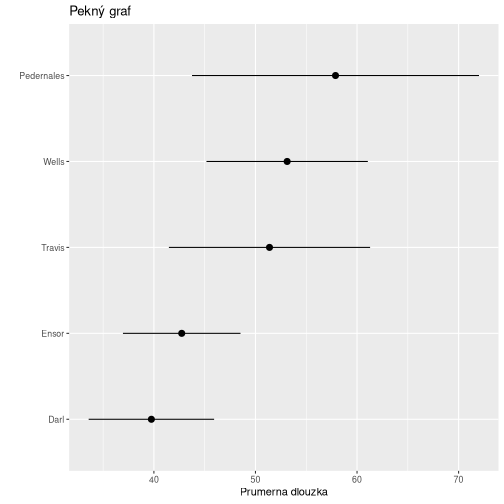
Normal distribution
type: section
Normal distribution
(bell-shaped curve, Gaussian distribution)

One sigma
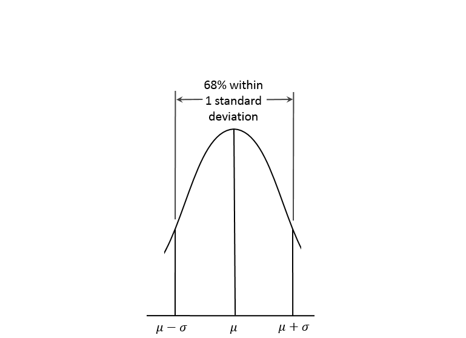
Two sigma
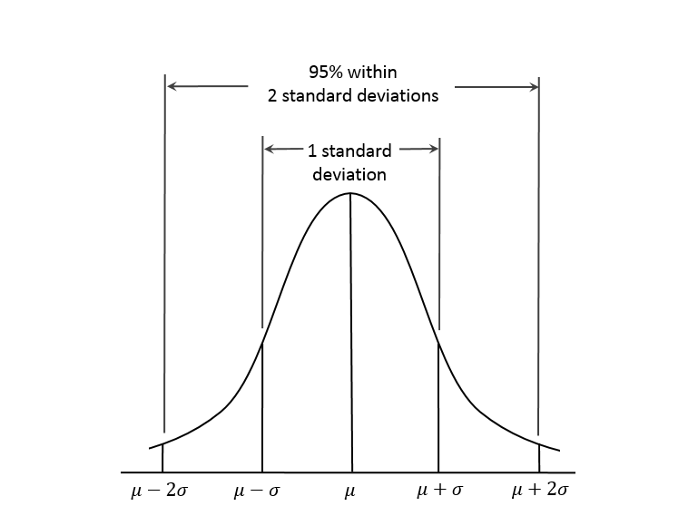
Tree sigma
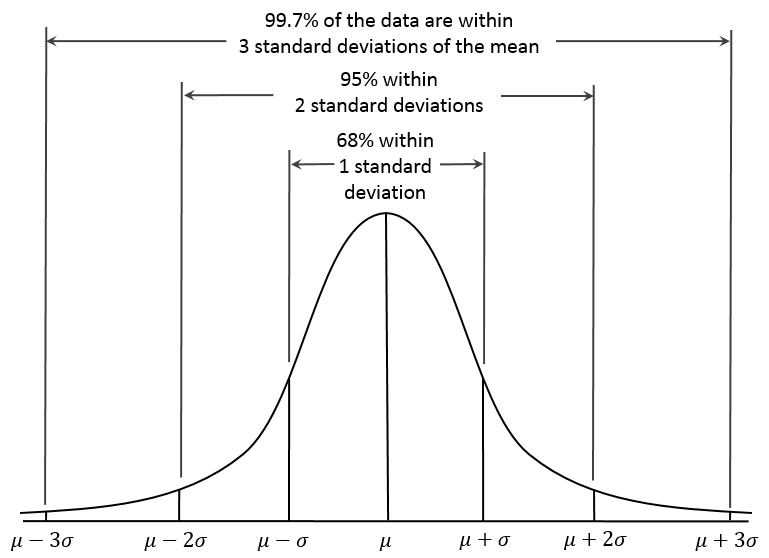
Normal distribution in different plots
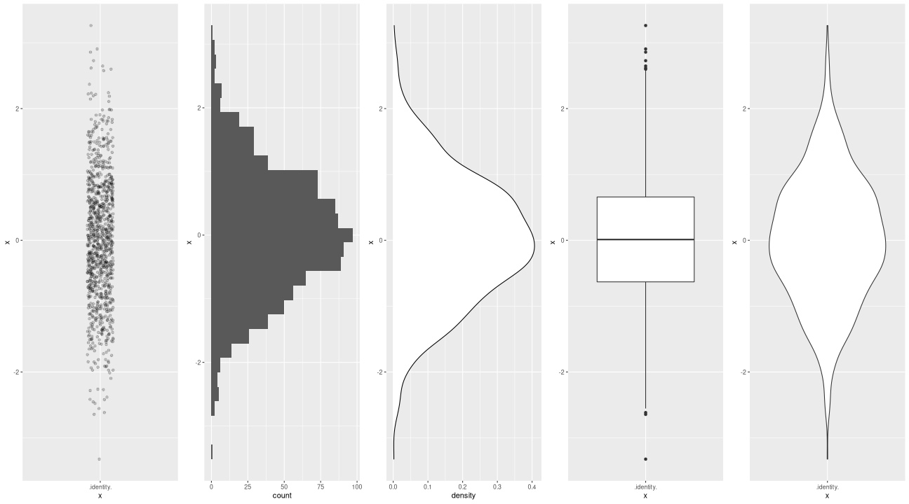
Mean and median in normal distribution
left: 40%
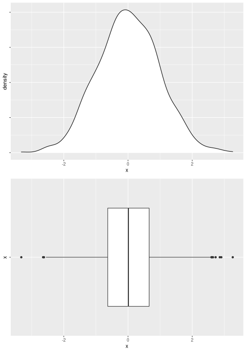
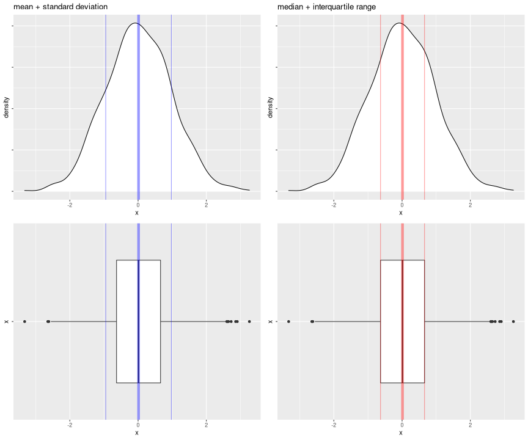
Is my distribution normal?
type: sub-section
Is my distribution normal?
Visual aids
- Density plot
- Q-Q plot (quantile-quantile plot)
qqnorm(x)nebo
ggplot(data, aes(sample = x)) + geom_qq()
Statistical hypothesis test
- Shapiro-Wilk test
shapiro.test() - Kolmogorov-Smirnov normality test
Q-Q plot
ggplot(nd, aes(x)) +
geom_density()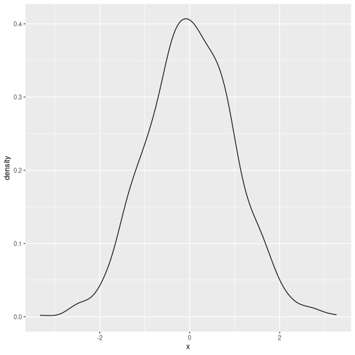
ggplot(nd, aes(sample = x)) +
geom_qq(alpha = 0.4)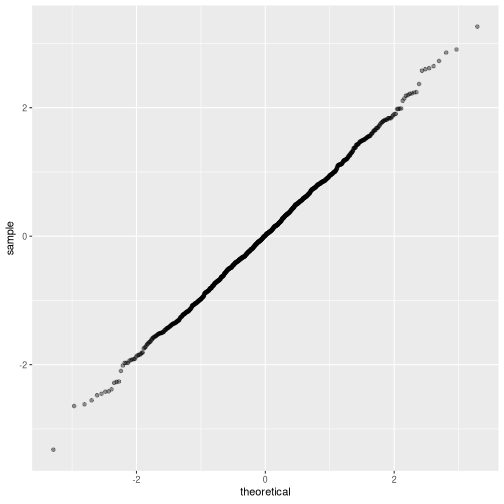
Shapiro-Wilk normality test
\(H_0\) (null hypothesis): Values fit normal distribution.
\(H_A\) (alternative hypothesis): Values do not fit normal distribution.
p-value: probability of the event that observed values fit normal distribution
p > 0.05: Fail to reject null hypothesis.
Significance level = 0.05 – Event occurs in less than 5% of cases
shapiro.test(nd$x)
Shapiro-Wilk normality test
data: nd$x
W = 0.99925, p-value = 0.9671Data distribution shapes
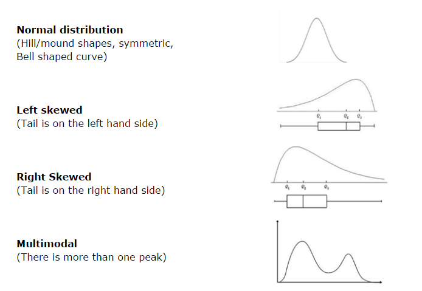
Transforming data
incremental: false
Many (!) statistical methods suppose the distribution of data is normal.
Parametric vs non-parametric statistical methods.
Most of (our) real world data is not normal.
Data are transformed using various methods…
Natural/Base 10 logarithms:
log10(x)Square root:
sqrt(x)Multimodal distributions?
Transformations
title: false
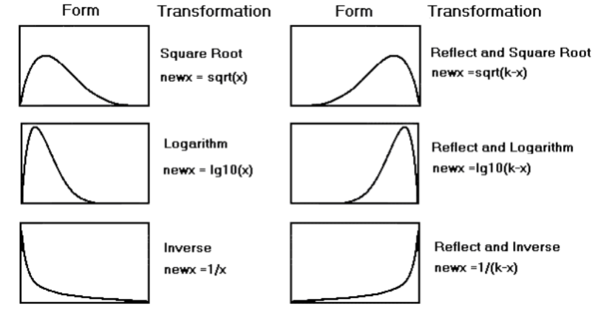
Relative position of a data point in a data set
type: sub-section
Z–Score
incremental: false
- Recall what is standard deviation?
- How many standard deviations is the data point from the mean?
\[z-score = \frac{x_i-\overline{x}}{s}\]
- Why is this useful?
- What if we count z-scores for the whole dataset?
Z–Score
title: false
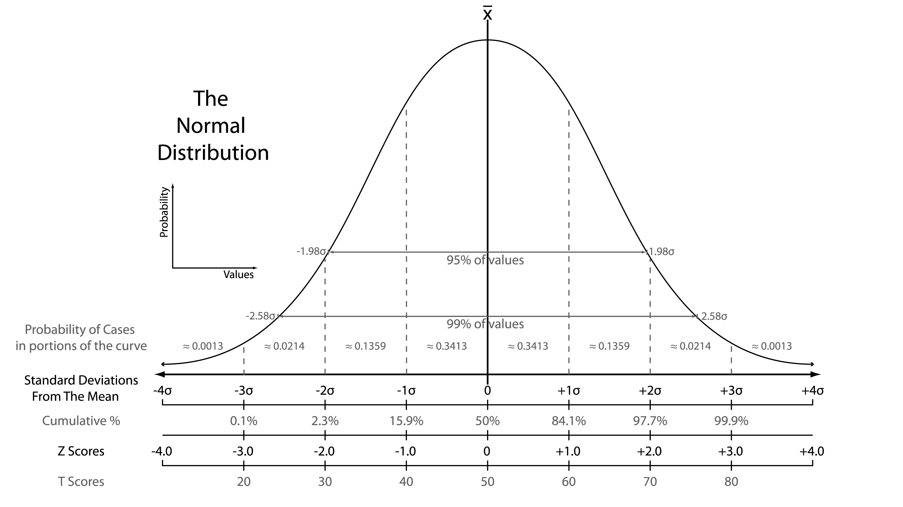